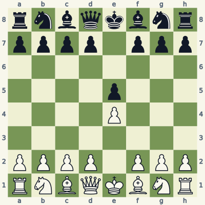
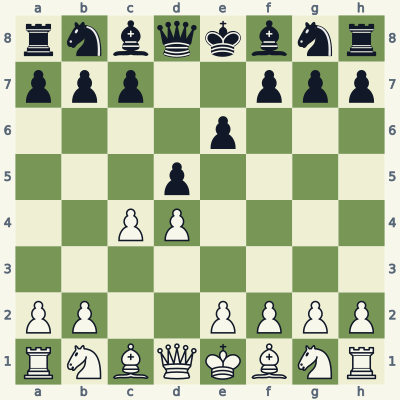
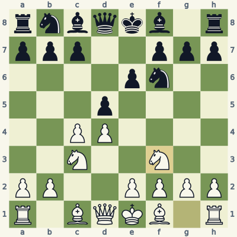
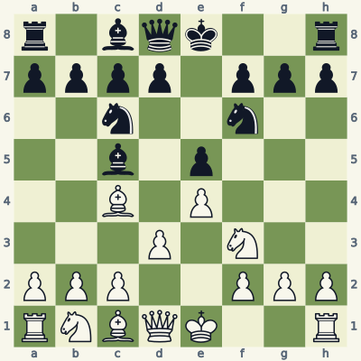
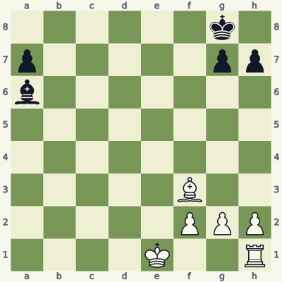
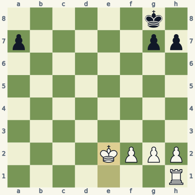
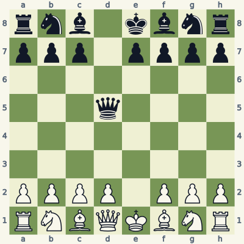
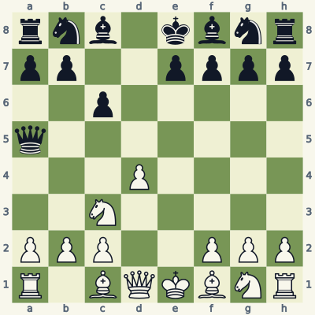
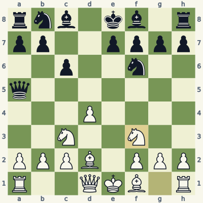

For players who know how the pieces move. Read the model, try the exercise without the answer, then explain the result aloud. Use a board and make the moves one at a time. Spend about 20 minutes per lesson; repeat it tomorrow and a week later.
Check the immediate threat, choose candidates, test the opponent's checks and captures, then inspect the final position. Some questions ask for a safe move or correct diagnosis rather than a unique best move. Sample replies illustrate ideas unless the explanation says they are forced.
Notation and replay help
K king · Q queen · R rook · B bishop · N knight. A pawn move has no piece letter. Nf3 means knight to f3; Rxc6 means rook captures on c6; + means check; # means mate; O-O means kingside castling; e8=Q means promotion. A line beginning 1... starts with Black. Diagrams face the player to move.
The PGN download loads starting positions and sample lines into a chess program. Position codes (FEN) let you recreate individual boards. The PDF and website work without an account.
Lesson 06.1
Develop toward the central struggle
Opening moves should do visible work: influence the center, develop pieces to useful squares, and prepare king safety. Principles help you generate candidates; threats decide the move.

Model A · White to movePosition codernbqkbnr/pppp1ppp/8/4p3/4P3/8/PPPP1PPP/RNBQKBNR w KQkq - 0 2
Read the position
The pawns on e4 and e5 contest central squares.
Nf3 develops a knight and attacks the e5-pawn.
Moving the knight and f1-bishop prepares kingside castling, subject to its safety conditions.
2. Nf3 Nc6 3. Bc4
Nf3 develops with a target. Black can answer ...Nc6, defending e5 while bringing out a piece. Bc4 then develops the bishop and looks toward f7.
These are useful moves because their jobs can be explained from the board. They are not a script to follow regardless of the opponent. If Black creates a concrete threat or changes the center, stop and inspect that change before making your next familiar move.
Exercise B · White to move
Take five minutes. Write your reason and the opponent's reply before opening the answer.

Inspect what changed from the model.Position codernbqkbnr/ppp2ppp/4p3/3p4/2PP4/8/PP2PPPP/RNBQKBNR w KQkq - 0 3
Which central square does Nc3 help White control?
Why is ...Nf6 a sensible black reply?
Give White's next developing move and one job it performs.
Read the full explanation
Nc3 attacks d5 and e4. The d5-pawn is the central point of contact with White's c4-pawn. The knight also develops toward the center.
...Nf6 develops a knight and protects d5. It helps Black maintain the central pawn rather than reacting to development with an unrelated move.
Nf3 develops the other knight, controls d4 and e5, and clears g1 for eventual castling. White still needs to move the f1-bishop and verify king safety before castling. Several sound opening continuations exist.
3. Nc3 Nf6 4. Nf3

Position after the sample line; the last move is highlighted.
Score your explanation: 1 point for the fact and 1 for its consequence in each answer, out of 6. At 4 or below, replay the model and revisit tomorrow.
Where the idea can fail
Do not turn development into a counting contest. A developed piece on an unsafe square is worse than an undeveloped piece that can enter safely next turn.
Use it in your own games
For the first ten moves of one game, write a short job beside each move. If a move only says "it is theory," find its actual target, defense or preparation.
Castling is a king move with strict conditions. Clear squares are necessary, but the king also needs a safe starting square, transit square and destination.

Model A · White to movePosition coder1bqk2r/pppp1ppp/2n2n2/2b1p3/2B1P3/3P1N2/PPP2PPP/RNBQK2R w KQkq - 1 5
Read the position
White's king and h1-rook retain castling rights.
The squares f1 and g1 are empty.
The king is not in check, and neither f1 nor g1 is attacked by Black.
5. O-O d6 6. c3
O-O moves the white king from e1 to g1 and the rook from h1 to f1. White improves king shelter and brings the rook nearer the center in one move.
The sample continuation ...d6 c3 supports a future central plan. Before playing it in a game, inspect Black's reply. Castling has improved safety, but it has not removed the need to check threats on every turn.
Exercise B · White to move
Take five minutes. Write your reason and the opponent's reply before opening the answer.

Inspect what changed from the model.Position code6k1/p5pp/b7/8/8/5B2/5PPP/4K2R w K - 0 1
Which square does Black's bishop on a6 attack along a6-b5-c4-d3-e2-f1?
Is O-O legal despite White retaining castling rights?
What does the example Be2 ...Bxe2 Kxe2 accomplish, and what right does White lose?
Read the full explanation
The bishop attacks f1, the square the king would cross. The path between a6 and f1 is clear in this diagram.
No. White cannot castle through the attacked square f1. Castling rights record move history; they do not guarantee that castling is legal now.
Be2 blocks the diagonal. If Black exchanges with ...Bxe2, Kxe2 removes that bishop. Moving the king permanently gives up castling rights. This illustrates a legal way to resolve the diagonal, not a uniquely best conversion of White's large material advantage.
1. Be2 Bxe2 2. Kxe2

Position after the sample line; the last move is highlighted.
Score your explanation: 1 point for the fact and 1 for its consequence in each answer, out of 6. At 4 or below, replay the model and revisit tomorrow.
Where the idea can fail
You cannot castle out of check, through check, or into check. You also lose the relevant right after moving the king or that rook, even if it returns to its original square. An attacked rook does not by itself forbid castling.
Use it in your own games
Before castling in three practice games, point to the king's starting, crossing and destination squares and name any enemy attacks on them.
Developing with an attack can gain a tempo: the opponent must spend a turn dealing with your threat. Verify that the developing piece really attacks its target.

Model A · White to movePosition codernb1kbnr/ppp1pppp/8/3q4/8/8/PPPP1PPP/RNBQKBNR w KQkq - 0 3
Read the position
Black's queen has recaptured on d5.
A knight developed to c3 attacks d5 directly.
White can use the queen's retreat to occupy the center with d4.
3. Nc3 Qa5 4. d4
Nc3 develops a piece while attacking the queen. After ...Qa5, d4 establishes a central pawn and opens the c1-bishop's diagonal.
Do not keep chasing the queen just because the first attack worked. Compare the usefulness of the next developing move with the time and squares you would give up to attack it again. The queen on a5 is not automatically trapped.
Exercise B · White to move
Take five minutes. Write your reason and the opponent's reply before opening the answer.

Inspect what changed from the model.Position codernb1kbnr/pp2pppp/2p5/q7/3P4/2N5/PPP2PPP/R1BQKBNR w KQkq - 0 5
Does Bd2 attack the queen on a5 in the exercise?
Which piece interrupts that diagonal?
Can Bd2 still be a useful move without an immediate threat to the queen?
Read the full explanation
No. The diagonal is d2-c3-b4-a5, and the bishop's line stops at c3. Black is not forced to move the queen in response to Bd2.
White's own knight stands on c3. Bishops cannot attack through friendly pieces. Calling this an attack on the queen would miscount the tempo.
Yes. Bd2 develops the bishop and can prepare future ideas if the knight moves. In the sample ...Nf6 Nf3, both sides continue development. A useful quiet move does not need to be described as a forcing move to justify it.
5. Bd2 Nf6 6. Nf3

Position after the sample line; the last move is highlighted.
Score your explanation: 1 point for the fact and 1 for its consequence in each answer, out of 6. At 4 or below, replay the model and revisit tomorrow.
Where the idea can fail
A diagonal that points toward the queen may be blocked by your own piece. Describe the actual attack, including intervening squares, before claiming that you gained a tempo.
Use it in your own games
For each developing move you call "with tempo," name the threatened capture and trace its path. If no legal threat exists, evaluate the move on its quieter merits.
All six starts and listed moves in this book were checked for legality. Stockfish 19 reviewed candidates at depth 18. Available endings with seven or fewer pieces were checked against the Lichess tablebase, including every move of the demonstrated endgame lines. A strategic sample is not a claim of unique best play.
These original, AI-assisted explanations were written around the positions and revised after checking. The lesson data and validation notes make the examples inspectable. Further reading and practice: